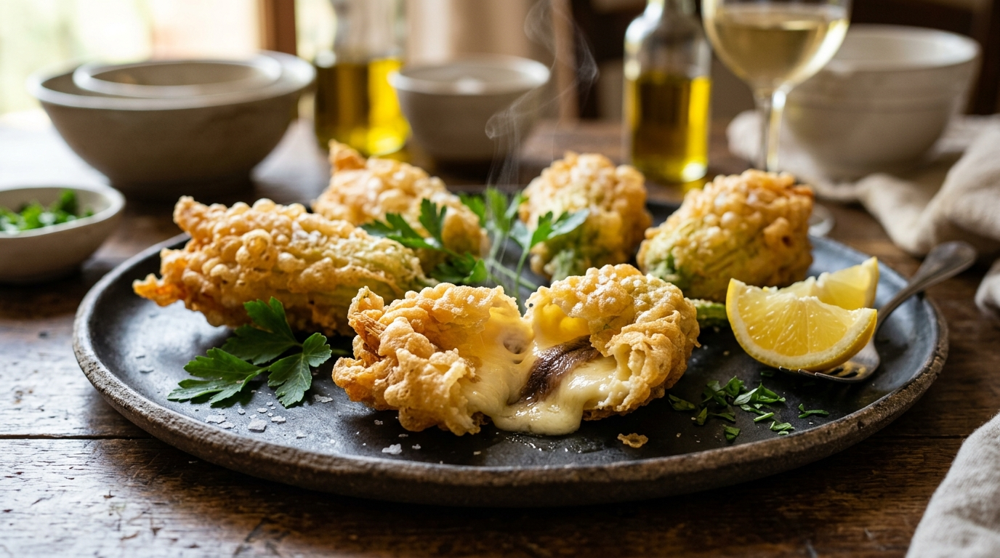
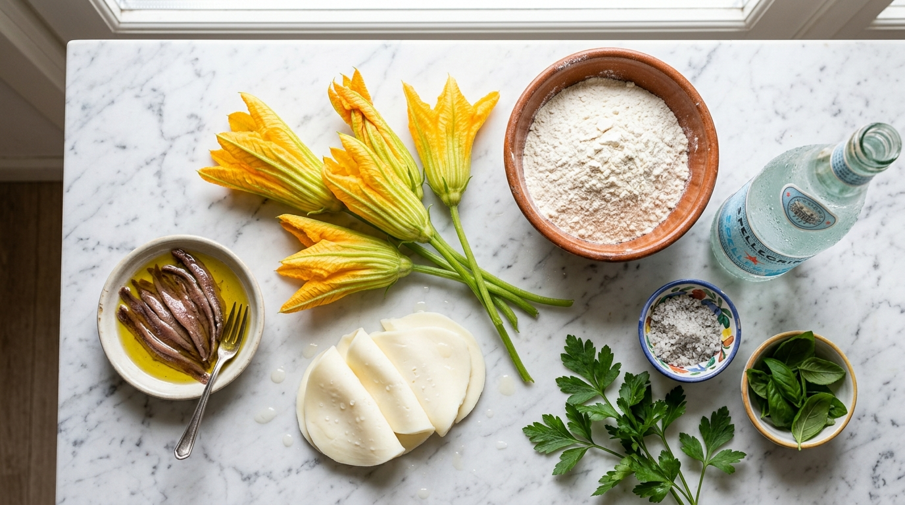

Croccantissimi fiori ripieni con sottiletta filante e alici sapide, avvolti da una pastella leggera e asciutta a shock termico con acqua frizzante ghiacciata.


Non lavare i fiori sotto l'acqua diretta per non inzupparli. Puliscili con carta inumidita. Rimuovi le escrescenze verdi alla base del calice. Apri con cura i petali ed estrai il pistillo interno (è amaro). Lascia 1-2 cm di gambo per afferrarli agevolmente.
Taglia ogni sottiletta in 4 striscioline. Arrotola 1 filetto d'alice attorno alla strisciolina di sottiletta e infilala delicatamente nella cavità del fiore. Richiudi la punta dei petali attorcigliandoli a ciuffetto per sigillare il ripieno.
In una ciotola versa la farina setacciata e un pizzico di sale. Unisci l'acqua frizzante ghiacciata (o birra freddissima da freezer) a filo mescolando rapidamente con una forchetta. Non lavorarla troppo: qualche grumetto in frittura diventerà una perla croccante! La densità deve velare il dorso del cucchiaio.
Scalda abbondante olio di arachide a 175°-180°C in padella profonda. Prendi un fiore per il gambo, passalo nella pastella fredda, lascia colare l'eccesso per 1 secondo e tuffalo nell'olio caldo. Friggi 3-4 pezzi alla volta per 2-3 minuti girandoli a metà fino a doratura uniforme.
Scola i fiori su carta paglia assorbente. Aggiungi il sale in fiocchi o fino SOLO un istante prima di servirli (il sale anticipato toglie croccantezza). Servili caldissimi con spicchi di limone fresco!